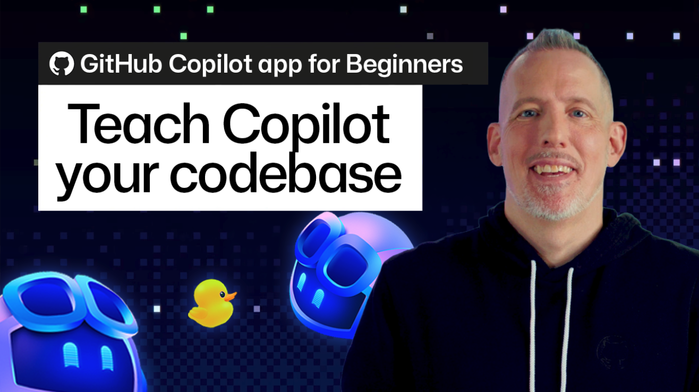
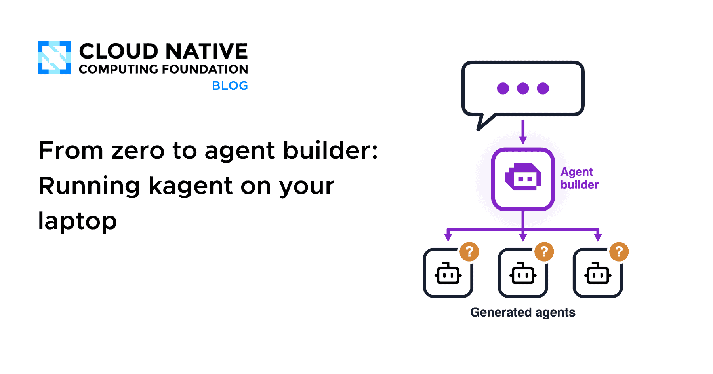
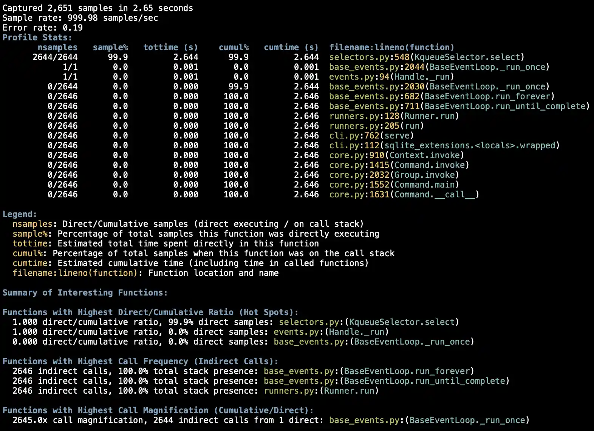
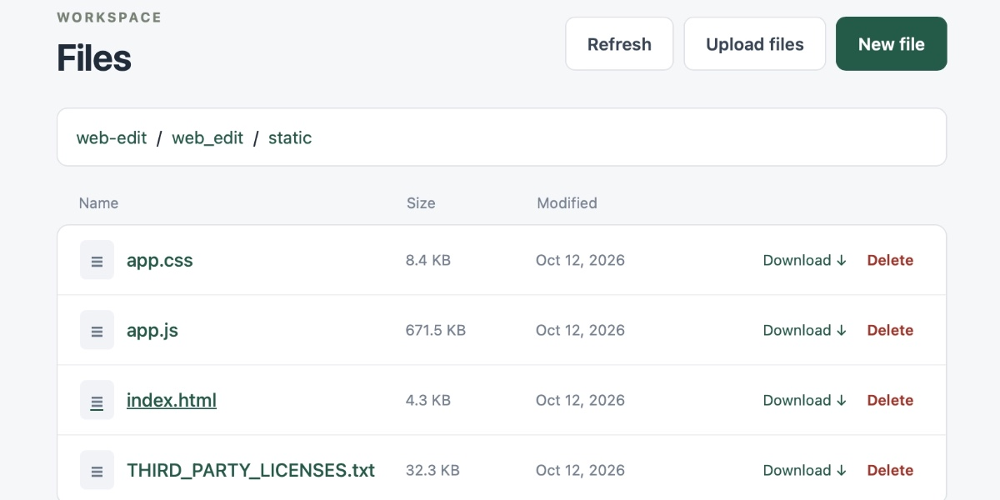
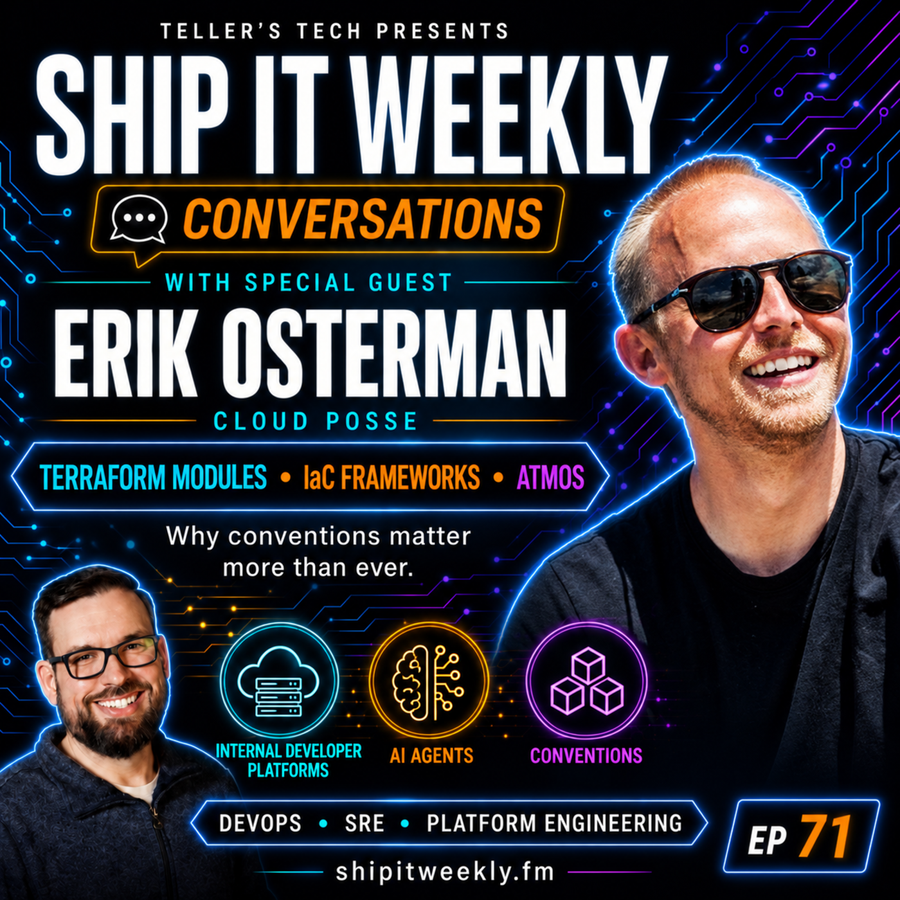
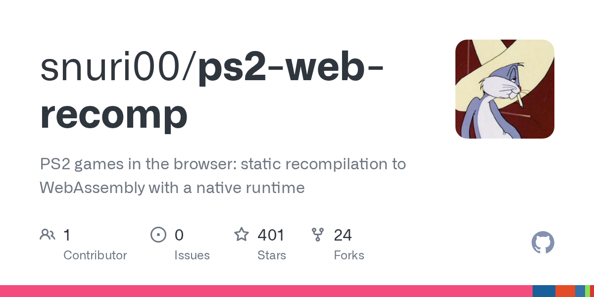
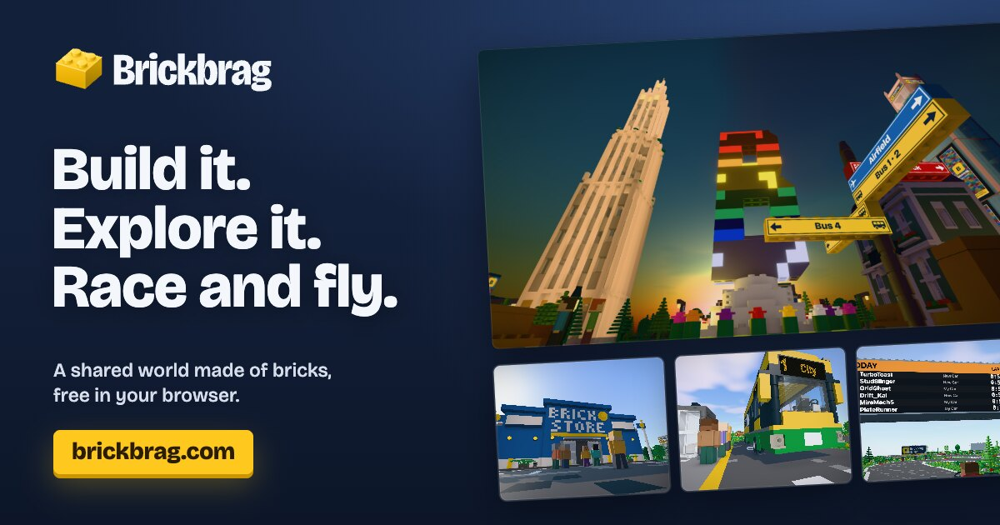
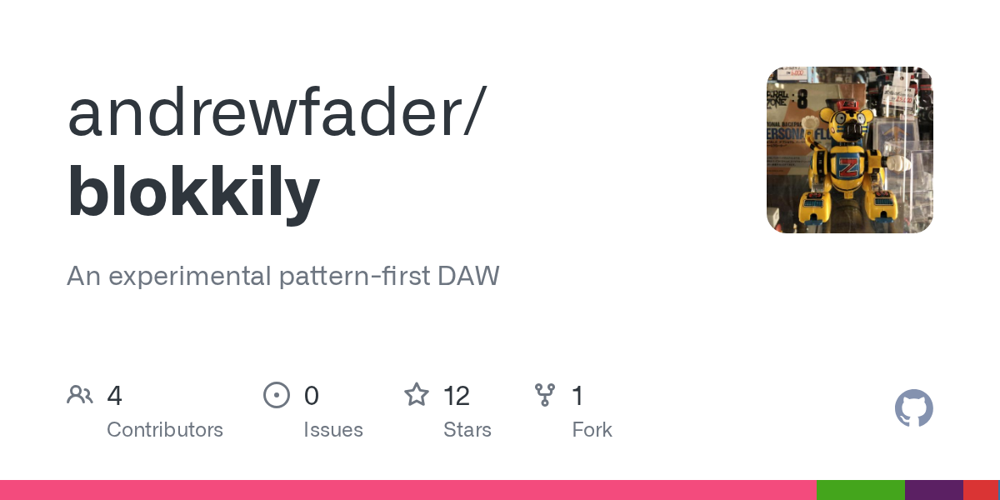

🔥 Top 3 (must read)
AI coding agents generate more code, but not more software
Ars Technica reports that AI coding agents make teams write a lot more code, but teams do not ship more working software. The story got a lot of attention on Hacker News (315 points, 275 comments), so the comments are worth reading too (discussion). Why it matters: As an EM, you need a fair way to measure AI adoption. "Lines of code" can look good while real delivery stays flat.
A
GitHub Copilot app for Beginners: How to teach Copilot about your codebase
A GitHub guide to adding custom instructions and skills to a repo, using custom agents, and connecting MCP servers. One of its MCP examples is Playwright. Why it matters: This covers two of your main topics in one post: setting up coding agents for a team, and connecting them to E2E testing tools.

From zero to agent builder: Running kagent on your laptop
A CNCF walkthrough for running kagent, an agent builder for Kubernetes, on your own machine. It goes past the "type one sentence, get an agent" demo and shows how the setup really works. Why it matters: AI agents and Kubernetes/DevOps meet here. You can test it locally before you think about using it in your cluster.

🛠 Tools & releases
Python 3.15 is out
: Simon Willison's notes on the highlights, including a new sampling profiler (a tool that checks your running program at regular times to find slow code). Support for Python 3.10 has now ended.

🤖 AI for developers
Launch HN: Agent37
: low-cost sandboxes (safe, separate places to run code) for running agents. 112 points, 72 comments.
N
Agent Permission Layers: Why RBAC Isn't Enough
: the post says one service account for an agent is not safe. It argues for separate permissions for tools, data, and actions.
web-edit 0.1a0
: a small web UI to edit files in a folder over Tailscale. Simon Willison built it so he could edit a credentials file from his phone without the secrets passing through the LLM. It is a good pattern for keeping secrets away from agents.

👔 Engineering & teams
Ship It Conversations: Erik Osterman (Cloud Posse)
: a podcast on Terraform modules, IaC frameworks, internal developer platforms, and why AI makes team conventions more valuable, not less.

🎯 For me
GitHub Blog
Copilot + Playwright MCP (): repo-level instructions and an MCP link to Playwright. This is a direct path to agent-driven E2E testing in your web projects.
Ars Technica
"More code, not more software" (): good input for your next talk with the team about AI use and how to measure delivery.
A
Ship It
Conventions matter more with AI (): supports writing down team standards so that agents (and new hires) follow them.
💡 App ideas & indie builds
PS2 games statically recompiled to WebAssembly
: the tool converts PS2 game code ahead of time so the games run in a browser. Problem: old games need emulators and setup. Inspiration: a tool that does a hard conversion once can turn a big install into "just open a link." (HN, 279 points)

Figma clone built by Opus 5.5 in 3 hours / 8 prompts
: a design tool built with only a few prompts. Problem: building a complex UI app usually takes months. Inspiration: it shows how fast you could build a first version of your own app idea with an agent. (HN)
M
Brickbrag
: a multiplayer world in the browser where people build with bricks. Problem: shared creative play usually needs an install or a console. Inspiration: a small multiplayer idea that runs in the browser can be easy to share. (HN)

Blokkily, a pattern-first DAW with MCP
: a music app (DAW = digital audio workstation) built around patterns, which AI agents can control through MCP. Problem: music tools are hard to automate or work on together with AI. Inspiration: adding MCP to your own app lets agents use it as a tool. (HN)

🎓 Try this
Add a custom instructions file to one of your repos and connect the Playwright MCP server to Copilot. Then ask it to write an E2E test for one real user flow. Follow the steps in How to teach Copilot about your codebase.